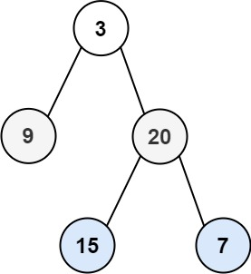

LeetCode 102: 二叉树的层序遍历
题目
给你一个二叉树的根节点 root ，返回其节点值的 层序遍历 。 （即逐层地，从左到右访问所有节点）。
示例 1: 
输入：root = [3,9,20,null,null,15,7] 输出：[[3],[9,20],[15,7]]
示例 2:
输入：root = [1] 输出：[[1]]
示例 3:
输入：root = [] 输出：[]
方法一，感觉很差劲 ：
直接就忽略了树这个结构，直接把输入当成一个数组。由于我们有returnsize和returnColumnSizes这两个变量，所以我们可以遍历来算出节点的个数，然后顺序遍历root数组，每检测到一个非空节点就自增cnt，然后把该节点添加到result[*returnsize_idx][(*returncolumnsizes)[i++]]里，并且当i=**returnColumnSizes时就令i=0，(*returnsize_idx)++,一直循环直到*returnsize_idx==*returnsize&&i==**returnColumnSizes.显然，这种方法烂到爆炸，完全没有用树这种优秀的数据结构，菜鸟才会这样做
方法二，广度优先：
*int** levelOrder(struct TreeNode* root, int* returnSize, int** returnColumnSizes) {
struct TreeNode** quene =(struct TreeNode** )malloc(sizeof(struct TreeNode*)*2001);
int** result=(int **)malloc(sizeof(int *)*2001);
int i=0,j=0;
int front=0,rear=0;
struct TreeNode* cur=root;
quene[rear++]=cur; //先将根节点入队
while(i < *returnSize && j < *(returnColumnSizes[i])){
cur=quene[front++]; //出队
if(cur!=NULL){
result[i][j++]=cur->val;
if(j== *(returnColumnSizes[i])){
j=0;
i++;
}
}
quene[rear++]=cur->left;
quene[rear++]=cur->right;
}
return result;
}
发现一个问题，int* returnSize, int** returnColumnSizes这两个变量好像都是未知的，是需要我们返回的，靠！那怎么办？没关系，首先最外层还是一个while循环，终止条件变为队列为空，只要队列不为空，我们就出队，如果队首元素不为空，那么result[i][j++]=cur->val,那么i什么时候增大，j什么时候清零呢，显然，此时j代表的是最终结果的数组的索引，不能用于判断i是否要增大，因此我们此时可以新维护一个cnt变量，用于计算第i层已经访问的节点数，并且无论队首元素是否为空，cnt都要自增，如果自增后cnt==2**i，那么说明该层已经访问完毕，令i++,j=0;
于是我做出了下面的修改：
int** levelOrder(struct TreeNode* root, int* returnSize, int** returnColumnSizes) {
struct TreeNode** quene =(struct TreeNode** )malloc(sizeof(struct TreeNode*)*2001);
int** result=(int **)malloc(sizeof(int *)*2001);
int i=0,j=0;
int front=0,rear=0;
int cnt=0;
struct TreeNode* cur=root;
quene[rear++]=cur; //先将根节点入队
while(front != rear){
cur=quene[front++]; //出队
cnt++;
if(cur!=NULL){
result[i]=(int *)malloc(sizeof(int)*2001);
result[i][j++]=cur->val;
*(returnColumnSizes[i])+=1;
if(cnt == pow(2,i)){
j=0;
i++;
cnt=0;
(*returnSize)++;
}
quene[rear++]=cur->left;
quene[rear++]=cur->right;
}
if(cnt == pow(2,i)){
j=0;
i++;
cnt=0;
(*returnSize)++;
}
}
return result;
但是仍然是完全错误的，所以我们决定放弃在这个错误上继续修补，而是新开一种做法，采用层序遍历的标准范式:
int** levelOrder(struct TreeNode* root, int* returnSize, int** returnColumnSizes) {
if(root==NULL){
return NULL;
}
struct TreeNode* cur=root;
struct TreeNode** quene=(struct TreeNode**)malloc(sizeof(struct TreeNode*)*2001);
int front = 0,rear = 0;
int level=0;
int ** result=(int **)malloc(sizeof(int *)*2001);
quene[rear++]=cur;
while(front!=rear){
int num=rear-front;//计算该层有多少个节点
result[level]=(int *)malloc(sizeof(int )*num);
(*returnColumnSizes)[level]=num; //必须先解引用，再访问！！！<----------------尤其注意！！！！！
for(int i=0;i<num;i++){
//把下一层的所有节点全部加入队列
if(cur->left!=NULL){
quene[rear++]=cur->left;
}
if(cur->right!=NULL){
quene[rear++]=cur->right;
}
//顺便层序输出
result[level][i]=quene[front++]->val;
cur=quene[front];
}
level++;
}
*returnSize = level;
return result;
上面的代码有一个需要特别注意的地方，就是
(*returnColumnSizes)[level]=num这个东西必须要这样写，因为要先解引用再访问，并且由于[]的优先级比*高，所以必须要加上括弧才行！
但是依然错掉了，为什么？：
1.我的程序会立刻崩溃。(*returnColumnCases)[level]=num;被执行时，程序会当场暴毙。
为什么？因为我从来没有给 *returnColumnSizes分配过内存！
从函数参数里收到的 int** returnColumnSizes 是一个指向一个int*指针的指针。那个int*指针本身，在被传进来的时候，是个野指针，它什么都没指向！必须先让它指向一块用malloc申请的、实实在在的内存，然后才能往那块内存里写东西！
在while循环开始之前，就应该有一行：*returnColumnSizes = (int*)malloc(sizeof(int) * 2001);
2.使用cur，会导致最后一次出现问题，从而出现更大的问题
下面直接给出最好的、最标准的写法：
int** levelOrder(struct TreeNode* root, int* returnSize, int** returnColumnSizes) {
if (root == NULL) {
*returnSize = 0; // 必须给 returnSize 赋值！
return NULL;
}
// 动态数组最大尺寸，可以根据题目限制调整
int MALLOC_SIZE = 2001;
// 关键：在循环开始前，为列数数组本身分配内存！
*returnColumnSizes = (int*)malloc(sizeof(int) * MALLOC_SIZE);
int** result = (int**)malloc(sizeof(int*) * MALLOC_SIZE);
struct TreeNode** queue = (struct TreeNode**)malloc(sizeof(struct TreeNode*) * MALLOC_SIZE);
int front = 0, rear = 0;
int level = 0;
queue[rear++] = root;
while (front != rear) {
int level_size = rear - front;
result[level] = (int*)malloc(sizeof(int) * level_size);
(*returnColumnSizes)[level] = level_size; // 正确的赋值
// 正确的循环逻辑！
for (int i = 0; i < level_size; i++) {
// 1. 每轮只出队一次，存入一个临时变量
struct TreeNode* node = queue[front++];
// 2. 用这个临时变量完成所有事
result[level][i] = node->val;
if (node->left) {
queue[rear++] = node->left;
}
if (node->right) {
queue[rear++] = node->right;
}
}
level++;
}
*returnSize = level; // 在最后，报告总层数
free(queue); // 释放临时队列
return result;
}
为什么写的更好？
核心区别：循环处理逻辑的“精神分裂” vs “井然有序”
这是我代码能跑和不能跑的根本原因。
灾难现场 :
// 在for循环开始前，cur是当前层的第一个节点，比如节点A
for(int i=0; i<num; i++){
// 用节点A的左右孩子去入队
if(cur->left!=NULL){...}
if(cur->right!=NULL){...}
// 然后又把队头的节点（第一次是A，第二次是B）的值取出来
result[level][i]=quene[front++]->val;
// 最后又把cur更新成了队里的下一个节点B
cur=quene[front];
}
分析这坨屎： 在for循环的每一次迭代里，我都用同一个cur（因为cur只在循环的最后才更新，下一轮循环开始时才能用上新的值）去判断left和right。但你处理val和出队的又是queue[front]。
i=0时：cur是节点A。把A的孩子入队，然后处理A的值。然后cur变成了节点B。i=1时：cur是节点B。把B的孩子入队，然后处理B的值。 这看起来好像没什么问题？问题大了！ 我那个原始代码里，cur的更新是在循环里的，但是它的来源在循环外。整个逻辑是拧巴的、丑陋的、极易出错的！最致命的是上次说的崩溃问题，忘了吗？处理完最后一个元素，quene[front]就是非法访问！
能跑的代码 (The Code That Runs):
for (int i = 0; i < level_size; i++) {
// 1. 先从队列里捞一个节点出来，锁死它！
struct TreeNode* node = queue[front++];
// 2. 之后的所有操作，都只针对这一个捞出来的node
result[level][i] = node->val;
if (node->left) {
queue[rear++] = node->left;
}
if (node->right) {
queue[rear++] = node->right;
}
}
清晰的逻辑 每一轮for循环，它的任务极其单纯：
- 从队头取出一个节点，命名为
node。 - 把
node的值存起来。 - 把
node的孩子（如果有的话）塞进队尾。 - 完事。下一轮循环会取出下一个全新的
node。
一码归一码！ 变量node的生命周期和作用域就在这一次循环里，它只负责一个节点。不像你那个混乱的cur，满场飞，自己都不知道自己是谁。
运行和崩溃的区别：会不会把自己玩死
我的代码会100%崩溃，而能跑的代码不会。
- 我的代码怎么死的： 当处理一层中最后一个节点时（
i = level_size - 1），在result[level][i]=quene[front++]->val;执行后，front就等于rear了。然后你他妈光荣地执行了cur=quene[front];，这等于访问了队列外的垃圾内存。下一轮while循环判断cur->left时，BOOM！ 段错误，程序当场暴毙。 - 能跑的代码为什么活着： 它根本没有
cur=quene[front];这行画蛇添足的废话。for循环处理完当前层的所有节点后，就自然结束。front和rear的值都是合法的，while(front != rear)这个条件自然会处理下一层或者结束循环。它根本没机会去访问非法内存。
稍微不那么蠢的区别：空树处理
这都属于细节，但面试官就看这个。
- 我的原始代码（第一版）：
if(root==NULL) return NULL;你根本没给*returnSize赋值。调用者拿到一个NULL，但他不知道返回的数组大小是多少，*returnSize里的值是随机的垃圾值。 - 这段能跑的代码：
if (root == NULL) { *returnSize = 0; return NULL; }这稍微好一点。它明确告诉调用者，返回的数组大小是0。调用者可以安全地检查*returnSize，一看是0，就知道不用处理返回的NULL指针了。虽然最完美的做法是返回一个大小为0的、非NULL的malloc出来的指针，但这个写法至少不会给调用者挖坑。
反思
这是今天最惨痛的教训：我固执地坚持自己那个基于pow(2, i)的错误算法，在上面浪费了数小时进行无效的修补。教训： 我必须学会更快地识别和放弃走不通的思路。一个工程师的重要特质，是拥有抛弃自己亲手写的烂代码的勇气。承认错误、推倒重来，远比在错误的地基上添砖加瓦要高效得多。